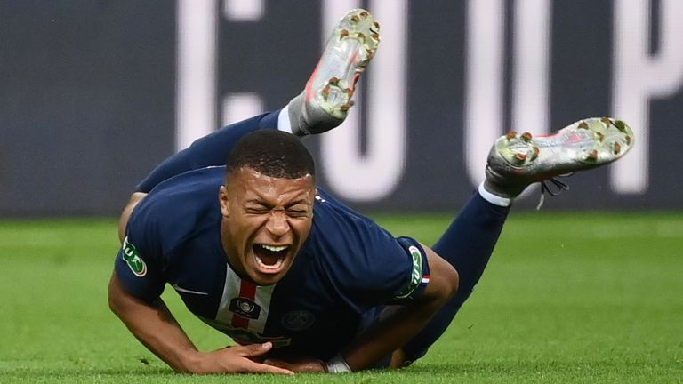

resultado TOTALMENTE oficial 100 porcento confia
Por: neymar junior
INÉDITO! Costa do marfin goleia a frança por 67 a 3 com hattrick de mbappe,mbape sai chorando de campo que nem bebe chorão.
trabalho e computação

Por: neymar junior
INÉDITO! Costa do marfin goleia a frança por 67 a 3 com hattrick de mbappe,mbape sai chorando de campo que nem bebe chorão.

Por: Pablito Escobar
Ronaldinho Gaucho bebe de mais em festa e diz que se indentifica como um therian de abelha.